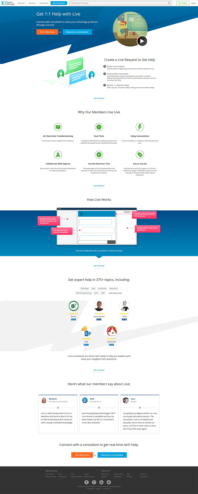

My Work
Experts Exchange | Website
As a front end developer at Experts Exchange, I had the opportunity to work on a variety of projects and help create the look and feel of the site. The user profile redesign, the Live product redesign, and the creation of the Headlines feed are a few examples of my work. You can see more details on each below.
Tools Used
- HTML/CSS/JS
- Photoshop
- Illustrator
Profile Page Redesign
Shown above is the new profile page that I built with my colleagues. Our goal was to have an initial "business card" view that would display information about the user's areas of expertise and skills. Farther down in the overview section, the user can give information on their background (work history, education, and biography) to serve as a résumé. There are four other sections that asynchronously load in, which are: the user's recent contributions on the site, certifications earned, ratings from Live or Gigs interactions, and endorsements that the user has given or received. On the right side, one can see the overall "level" of that user, see if the user has a "verified" account, and one can share the profile on social media. The profile owner also has a "preview" button. My role in this project was to create the HTML, CSS, and JS for more advanced user interactions — beyond what pure HTML and CSS can provide.
Live Product Redesign
The Live product allows clients to connect with consultants in a one-on-one conversation to get help with coding problems. The problem we were facing was that clients didn't know how to get started with the product. Previously, we showed a list of all available consultants and allowed clients to connect with anyone they chose, so the requests were not always a good fit and both sides got frustrated. To solve this problem, we streamlined the whole process by making the help request form front and center for the client. We also gave consultants the ability to specify which topics they were willing to help in. My role in this project was to mock up the initial designs in Photoshop for the help request page that lists the consultants available for a given request, and then to code all of the CSS to pull it off. I also provided new HTML structure when the need arose to work beyond what was already in place.
Live Landing Page
Shown above is the Live product's logged out view. The purpose of this page was to show the viewer why Live is valuable, how it works, and what users like about it — all in a well-designed and easy to use interface. I took the mockup provided by our UI team and created all the HTML and CSS needed to bring the page to life.
Headlines Feed
Headlines is intended to be a place for users to see tech news from around the internet. Users have the ability to cater the feed to their needs by hiding specific stories or entire sources, and adding new sources by importing RSS feeds. I created the look and feel of the feed and worked with my team's UI designer to come up with the final "card" design. I also created the HTML and CSS needed to organize the cards at any screen size and adjust to any quantity.
APC Entertainment | Website and Logo Design
This was a website that I designed and coded for an acquaintance. The client was a DJ and needed a site that would showcase the services he provided, allow potential customers to get a price quote through an interactive "quote calculator," provide a way for users to book an event, display a media gallery, and have a contact form for general inquiries. You can check out the live site here.
Friend Quest | Podcast
Friend Quest is a podcast that I do with my friends where we play tabletop role playing games. We each record our audio separately and then I edit all of the tracks in Audition to get the final cut. Then, I add the intro and outro music, record voiceovers for the intro and outro, and add some basic EQ and noise filtering. Finally, I export the final audio and bring it into Premier to create a video version of the episode as well. The cover artwork was done by Peter Freeby.
Tools Used
- Audition
- Premier
Episodes
3D Animation
You can find my current 3D animation demo reel on Vimeo. Most of these are personal projects to practice and develop my skills, ranging from fluid simulations to create fire effects, to original character concepts. FireSwing Studios was a start up that I worked at for a couple summers. I created a 3D rendered splash screen for the app that we were working on. Although this splash screen was never implemented, it is still one of my favorite things that I have made.
Tools Used
- Maya
- Premier
Cyber Spartan | Personal Project


These are some variations of a "cyber spartan" character that I created.
FireSwing Studios | Splash Screen
This is the first version of the splash screen. I was still experimenting with the fluid dynamics to get the right look for the flame.
At this point, I had fine-tuned the fluid effects to get the desired look for the flames.
We wanted to try a lighter colored background.
It was requested to have a glass-breaking effect, just to see how it would look.
This is a screenshot of the final render. You can see the full animation in my demo reel on Vimeo.
Github
You can see my recent projects on my Github: github.com/MikkelSandbag.